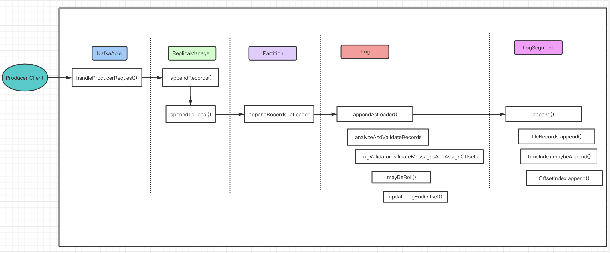

broker 处理请求
Kafka broker上对于producer发过来的消息的处理流程图

Log对象
每个 replica 会对应一个 log 对象，log 对象是管理当前分区的一个单位，它会包含这个分区的所有 segment 文件（包括对应的 offset 索引和时间戳索引文件），它会提供一些增删查的方法。
在 Log 对象的初始化时，有如下的几个重要变量：
- nextOffsetMetadata：可以叫做下一个偏移量元数据，它包括 activeSegment 的下一条消息的偏移量，该 activeSegment 的基准偏移量及日志分段的大小；
- activeSegment：指的是该 Log 管理的 segments 中那个最新的 segment（这里叫做活跃的 segment），一个 Log 中只会有一个活跃的 segment，其他的 segment 都已经被持久化到磁盘了；
- logEndOffset：表示下一条消息的 offset，它取自 nextOffsetMetadata 的 offset，实际上就是活动日志分段的下一个偏移量。
消息追加到日志中时，是以 segment 为单位的，当 segment 的大小到达阈值大小之后，会滚动新建一个日志分段（segment）保存新的消息，而分区的消息总是追加到最新的日志分段（也就是 activeSegment）中。每个日志分段都会有一个基准偏移量（segmentBaseOffset，或者叫做 baseOffset），这个基准偏移量就是分区级别的绝对偏移量，而且这个值在日志分段是固定的。有了这个基准偏移量，就可以计算出来每条消息在分区中的绝对偏移量，最后把数据以及对应的绝对偏移量写到日志文件中。
入口：kafka.server.KafkaApis#handle
/**
* Handle a produce request
*/
def handleProduceRequest(request: RequestChannel.Request)
...
// call the replica manager to append messages to the replicas
replicaManager.appendRecords(
timeout = produceRequest.timeout.toLong,
requiredAcks = produceRequest.acks,
internalTopicsAllowed = internalTopicsAllowed,
isFromClient = true,
entriesPerPartition = authorizedRequestInfo,
responseCallback = sendResponseCallback,
processingStatsCallback = processingStatsCallback)
...
kafka.server.ReplicaManager#appendRecords
处理逻辑主要如下
- 首先判断 acks 设置是否有效（-1，0，1三个值有效），无效的话直接返回异常，不再处理；
- acks 设置有效的话，调用 appendToLocalLog() 方法将 records 追加到本地对应的 log 对象中；
- appendToLocalLog() 处理完后，如果发现 clients 设置的 acks=-1，即需要 isr 的其他的副本同步完成才能返回 response，那么就会创建一个 DelayedProduce 对象，等待 isr 的其他副本进行同步，否则的话直接返回追加的结果。
/**
* Append messages to leader replicas of the partition, and wait for them to be replicated to other replicas;
* the callback function will be triggered either when timeout or the required acks are satisfied;
* if the callback function itself is already synchronized on some object then pass this object to avoid deadlock.
*/
def appendRecords(timeout: Long,
requiredAcks: Short,
internalTopicsAllowed: Boolean,
isFromClient: Boolean,
entriesPerPartition: Map[TopicPartition, MemoryRecords],
responseCallback: Map[TopicPartition, PartitionResponse] => Unit,
delayedProduceLock: Option[Lock] = None,
processingStatsCallback: Map[TopicPartition, RecordsProcessingStats] => Unit = _ => ()) {
if (isValidRequiredAcks(requiredAcks)) {
val sTime = time.milliseconds
// 向本地的副本 log 追加数据
val localProduceResults = appendToLocalLog(internalTopicsAllowed = internalTopicsAllowed,
isFromClient = isFromClient, entriesPerPartition, requiredAcks)
debug("Produce to local log in %d ms".format(time.milliseconds - sTime))
val produceStatus = localProduceResults.map { case (topicPartition, result) =>
topicPartition ->
ProducePartitionStatus(
result.info.lastOffset + 1, // required offset
new PartitionResponse(result.error, result.info.firstOffset, result.info.logAppendTime, result.info.logStartOffset)) // response status
}
processingStatsCallback(localProduceResults.mapValues(_.info.recordsProcessingStats))
if (delayedProduceRequestRequired(requiredAcks, entriesPerPartition, localProduceResults)) {
// 处理 ack=-1 的情况,需要等到 isr 的 follower 都写入成功的话,才能返回最后结果
// create delayed produce operation
val produceMetadata = ProduceMetadata(requiredAcks, produceStatus)
val delayedProduce = new DelayedProduce(timeout, produceMetadata, this, responseCallback, delayedProduceLock)
// create a list of (topic, partition) pairs to use as keys for this delayed produce operation
val producerRequestKeys = entriesPerPartition.keys.map(new TopicPartitionOperationKey(_)).toSeq
// try to complete the request immediately, otherwise put it into the purgatory
// this is because while the delayed produce operation is being created, new
// requests may arrive and hence make this operation completable.
delayedProducePurgatory.tryCompleteElseWatch(delayedProduce, producerRequestKeys)
} else {
// we can respond immediately
val produceResponseStatus = produceStatus.mapValues(status => status.responseStatus)
responseCallback(produceResponseStatus)
}
} else {
// If required.acks is outside accepted range, something is wrong with the client
// Just return an error and don't handle the request at all
val responseStatus = entriesPerPartition.map { case (topicPartition, _) =>
topicPartition -> new PartitionResponse(Errors.INVALID_REQUIRED_ACKS,
LogAppendInfo.UnknownLogAppendInfo.firstOffset, RecordBatch.NO_TIMESTAMP, LogAppendInfo.UnknownLogAppendInfo.logStartOffset)
}
responseCallback(responseStatus)
}
}
- acks：-1，0，1 三个值
private def isValidRequiredAcks(requiredAcks: Short): Boolean = {
requiredAcks == -1 || requiredAcks == 1 || requiredAcks == 0
}
- acks=0，生产者成功写入消息之前不会等待来自任何服务器的响应，这种配置，提高吞吐量，但是消息存在丢失风险。
- acks=1(默认)，只要集群的leader（master）收到了消息，生产者将会受到发送成功的一个响应，如果消息无撞到达首领节点（比如首领节点崩愤，新的首领还没有被选举出来），生产者会收到一个错误响应，为了避免数据丢失，生产者会重发消息。不过，如果一个没有收到消息的节点成为新首领，消息还是会丢失。这个时候的吞吐量取决于使用的是 同步发送还是异步发送。如果让发送客户端等待服务器的响应（通过调用Fututre 对象的get（）方法，显然会增加延迟（在网络上传输一个来回的延迟）。如果客户端使用回调，延迟问题就可以得到缓解，不过吞吐量还是会受发送中消息数量的限制（比如，生产者在收到服务器响应之前可以发送多少个消息）。
acks=-1，所有参与复制的节点全部收到消息的时候，生产者才会收到来自服务器的一个响应，这种模式最安全，但是吞吐量受限制，它可以保证不止一个服务器收到消息，就算某台服务器奔溃，那么整个集群还是会正产运转。
kafka.server.ReplicaManager#appendToLocalLog
/**
* Append the messages to the local replica logs
*/
private def appendToLocalLog(internalTopicsAllowed: Boolean,
isFromClient: Boolean,
entriesPerPartition: Map[TopicPartition, MemoryRecords],
requiredAcks: Short): Map[TopicPartition, LogAppendResult] = {
trace(s"Append [$entriesPerPartition] to local log")
entriesPerPartition.map { case (topicPartition, records) =>
brokerTopicStats.topicStats(topicPartition.topic).totalProduceRequestRate.mark()
brokerTopicStats.allTopicsStats.totalProduceRequestRate.mark()
// reject appending to internal topics if it is not allowed
if (Topic.isInternal(topicPartition.topic) && !internalTopicsAllowed) {
(topicPartition, LogAppendResult(
LogAppendInfo.UnknownLogAppendInfo,
Some(new InvalidTopicException(s"Cannot append to internal topic ${topicPartition.topic}"))))
} else {
try {
val partitionOpt = getPartition(topicPartition)
val info = partitionOpt match {
case Some(partition) =>
if (partition eq ReplicaManager.OfflinePartition)
throw new KafkaStorageException(s"Partition $topicPartition is in an offline log directory on broker $localBrokerId")
// 追加records到leader上
partition.appendRecordsToLeader(records, isFromClient, requiredAcks)
case None => throw new UnknownTopicOrPartitionException("Partition %s doesn't exist on %d"
.format(topicPartition, localBrokerId))
}
val numAppendedMessages =
if (info.firstOffset == -1L || info.lastOffset == -1L)
0
else
info.lastOffset - info.firstOffset + 1
// update stats for successfully appended bytes and messages as bytesInRate and messageInRate
brokerTopicStats.topicStats(topicPartition.topic).bytesInRate.mark(records.sizeInBytes)
brokerTopicStats.allTopicsStats.bytesInRate.mark(records.sizeInBytes)
brokerTopicStats.topicStats(topicPartition.topic).messagesInRate.mark(numAppendedMessages)
brokerTopicStats.allTopicsStats.messagesInRate.mark(numAppendedMessages)
trace("%d bytes written to log %s-%d beginning at offset %d and ending at offset %d"
.format(records.sizeInBytes, topicPartition.topic, topicPartition.partition, info.firstOffset, info.lastOffset))
(topicPartition, LogAppendResult(info))
} catch {
// NOTE: Failed produce requests metric is not incremented for known exceptions
// it is supposed to indicate un-expected failures of a broker in handling a produce request
case e@ (_: UnknownTopicOrPartitionException |
_: NotLeaderForPartitionException |
_: RecordTooLargeException |
_: RecordBatchTooLargeException |
_: CorruptRecordException |
_: KafkaStorageException |
_: InvalidTimestampException) =>
(topicPartition, LogAppendResult(LogAppendInfo.UnknownLogAppendInfo, Some(e)))
case t: Throwable =>
val logStartOffset = getPartition(topicPartition) match {
case Some(partition) =>
partition.logStartOffset
case _ =>
-1
}
brokerTopicStats.topicStats(topicPartition.topic).failedProduceRequestRate.mark()
brokerTopicStats.allTopicsStats.failedProduceRequestRate.mark()
error("Error processing append operation on partition %s".format(topicPartition), t)
(topicPartition, LogAppendResult(LogAppendInfo.unknownLogAppendInfoWithLogStartOffset(logStartOffset), Some(t)))
}
}
}
}
kafka.cluster.Partition#appendRecordsToLeader
Partition组件是topic在某个broker上一个副本的抽象。每个partition对象都会维护一个Replica对象，Replica对象中又维护Log对象，也就是数据目录的抽象
def appendRecordsToLeader(records: MemoryRecords, requiredAcks: Int = 0) = {
val (info, leaderHWIncremented) = inReadLock(leaderIsrUpdateLock) {
leaderReplicaIfLocal match {
//写之前先判断该replica是否是leader，如果不是leader则没有写权限
case Some(leaderReplica) =>
//获取该partition的log对象
val log = leaderReplica.log.get
//获取配置的minInSyncReplicas值
val minIsr = log.config.minInSyncReplicas
//当前ISR的数量
val inSyncSize = inSyncReplicas.size
// 如果请求的acks=-1，但是当前的ISR比配置的minInSyncReplicas还小，那要抛出错误，表示当前ISR不足
if (inSyncSize < minIsr && requiredAcks == -1) {
throw new NotEnoughReplicasException("Number of insync replicas for partition %s is [%d], below required minimum [%d]"
.format(topicPartition, inSyncSize, minIsr))
}
//调用log的append方法写入消息
val info = log.append(records, assignOffsets = true)
// probably unblock some follower fetch requests since log end offset has been updated
replicaManager.tryCompleteDelayedFetch(TopicPartitionOperationKey(this.topic, this.partitionId))
// we may need to increment high watermark since ISR could be down to 1
(info, maybeIncrementLeaderHW(leaderReplica))
case None =>
throw new NotLeaderForPartitionException("Leader not local for partition %s on broker %d"
.format(topicPartition, localBrokerId))
}
}
// some delayed operations may be unblocked after HW changed
if (leaderHWIncremented)
tryCompleteDelayedRequests()
info
}
这里的步骤总结
- 先判断自己是否是leader，只有leader才可以接收producer请求然后写数据
- 判断当前的当前的ISR数量是否比minInSyncReplicas还小，如果ISR数量小于minInSyncReplicas就抛出异常
- 把消息交给自己管理的Log组件处理
kafka.log.Log#appendAsLeader
Log对象是对partition数据目录的抽象。管理着某个topic在某个broker的一个partition,它可能是一个leader，也可能是replica。同时，Log对象还同时管理着多个LogSegment，也就是日志的分段。
回顾kafka log文件结构：

/**
* Append this message set to the active segment of the log, assigning offsets and Partition Leader Epochs
*
* @param records The records to append
* @param isFromClient Whether or not this append is from a producer
* @throws KafkaStorageException If the append fails due to an I/O error.
* @return Information about the appended messages including the first and last offset.
*/
def appendAsLeader(records: MemoryRecords, leaderEpoch: Int, isFromClient: Boolean = true): LogAppendInfo = {
append(records, isFromClient, assignOffsets = true, leaderEpoch)
}
- Log组件拿到消息后，对消息内容进行校验以及裁剪，然后设置每一条消息的offset。还会计算当前这批消息的最大时间戳是多少，即maxTimestamp，这个时间戳和日志保留时间有着密切关系
- 还会校验要写入的消息数量是否大于一个segment所能容纳的最大限制，这个限制和配置segment.bytes有关系
- 写入到segment之前还要判断如果把这些消息写入segment，会不会导致segment超出segment.bytes的大小，如果会的话，要新建一个新的segment用于日志写入
- 把消息传过最新活跃的LogSegment处理
def append(records: MemoryRecords, assignOffsets: Boolean = true): LogAppendInfo = {
//判断消息格式是否正确.分析消息的压缩格式
val appendInfo = analyzeAndValidateRecords(records)
//如果没有一条消息格式正确，直接返回
if (appendInfo.shallowCount == 0)
return appendInfo
//裁剪一些错误的数据
var validRecords = trimInvalidBytes(records, appendInfo)
try {
lock synchronized {
//需要给消息分配offset的话
if (assignOffsets) {
// 计算第一条消息的offset
val offset = new LongRef(nextOffsetMetadata.messageOffset)
appendInfo.firstOffset = offset.value
val now = time.milliseconds
val validateAndOffsetAssignResult = try {
//给每一条消息设置offset。并且找出maxTimestamp以及maxTimestamp对于的offset
LogValidator.validateMessagesAndAssignOffsets(validRecords,
offset,
now,
appendInfo.sourceCodec,
appendInfo.targetCodec,
config.compact,
config.messageFormatVersion.messageFormatVersion,
config.messageTimestampType,
config.messageTimestampDifferenceMaxMs)
} catch {
case e: IOException => throw new KafkaException("Error in validating messages while appending to log '%s'".format(name), e)
}
//获取有效的记录，然后根据这些记录设置响应的返回内容
validRecords = validateAndOffsetAssignResult.validatedRecords
//消息的最大时间戳和配置的messageTimestampType有关系。当前获取消息maxTimestamp时间戳的方式有两种。
//1. 根据消息的timestamp来设置时间戳
//2. 根据消息的写入时间来设置时间戳,也就是当前时间
appendInfo.maxTimestamp = validateAndOffsetAssignResult.maxTimestamp
appendInfo.offsetOfMaxTimestamp = validateAndOffsetAssignResult.shallowOffsetOfMaxTimestamp
appendInfo.lastOffset = offset.value - 1
if (config.messageTimestampType == TimestampType.LOG_APPEND_TIME)
appendInfo.logAppendTime = now
// 由于前面的操作可能导致消息压缩格式改变以及消息格式改变，因此这里还需要重新检查一下当前的每条消息大小是否超过maxMessageSize的配置大小
if (validateAndOffsetAssignResult.messageSizeMaybeChanged) {
for (logEntry <- validRecords.shallowEntries.asScala) {
if (logEntry.sizeInBytes > config.maxMessageSize) {
// we record the original message set size instead of the trimmed size
// to be consistent with pre-compression bytesRejectedRate recording
BrokerTopicStats.getBrokerTopicStats(topicPartition.topic).bytesRejectedRate.mark(records.sizeInBytes)
BrokerTopicStats.getBrokerAllTopicsStats.bytesRejectedRate.mark(records.sizeInBytes)
throw new RecordTooLargeException("Message size is %d bytes which exceeds the maximum configured message size of %d."
.format(logEntry.sizeInBytes, config.maxMessageSize))
}
}
}
} else {
// we are taking the offsets we are given
if (!appendInfo.offsetsMonotonic || appendInfo.firstOffset < nextOffsetMetadata.messageOffset)
throw new IllegalArgumentException("Out of order offsets found in " + records.deepEntries.asScala.map(_.offset))
}
// 要写入的消息大小不能比一个segment的大小还大
if (validRecords.sizeInBytes > config.segmentSize) {
throw new RecordBatchTooLargeException("Message set size is %d bytes which exceeds the maximum configured segment size of %d."
.format(validRecords.sizeInBytes, config.segmentSize))
}
// 判断是否需要新建一个segment
val segment = maybeRoll(messagesSize = validRecords.sizeInBytes,
maxTimestampInMessages = appendInfo.maxTimestamp,
maxOffsetInMessages = appendInfo.lastOffset)
//调用segment的方法添加消息
segment.append(firstOffset = appendInfo.firstOffset,
largestOffset = appendInfo.lastOffset,
largestTimestamp = appendInfo.maxTimestamp,
shallowOffsetOfMaxTimestamp = appendInfo.offsetOfMaxTimestamp,
records = validRecords)
updateLogEndOffset(appendInfo.lastOffset + 1)
trace("Appended message set to log %s with first offset: %d, next offset: %d, and messages: %s"
.format(this.name, appendInfo.firstOffset, nextOffsetMetadata.messageOffset, validRecords))
//判断是否需要将消息刷盘
if (unflushedMessages >= config.flushInterval)
flush()
appendInfo
}
} catch {
case e: IOException => throw new KafkaStorageException("I/O exception in append to log '%s'".format(name), e)
}
}
kafka.log.LogSegment#append
LogSegment是partition目录中数据段的抽象，kafka会将一个副本中日志根据配置分段。这个LogSegment对象维护数据文件以及索引文件的信息。
def append(firstOffset: Long, largestOffset: Long, largestTimestamp: Long, shallowOffsetOfMaxTimestamp: Long, records: MemoryRecords) {
if (records.sizeInBytes > 0) {
trace("Inserting %d bytes at offset %d at position %d with largest timestamp %d at shallow offset %d"
.format(records.sizeInBytes, firstOffset, log.sizeInBytes(), largestTimestamp, shallowOffsetOfMaxTimestamp))
//记录要插入的第一条消息的物理地址，后面生成索引的时候会用到
val physicalPosition = log.sizeInBytes()
if (physicalPosition == 0)
rollingBasedTimestamp = Some(largestTimestamp)
//判断是否可以安全写入消息
require(canConvertToRelativeOffset(largestOffset), "largest offset in message set can not be safely converted to relative offset.")
//将消息写入到fileChannel
val appendedBytes = log.append(records)
trace(s"Appended $appendedBytes to ${log.file()} at offset $firstOffset")
//随时更新segment的maxTimestampSoFar值。
// 这个时间的获取和message.timestamp.type配置有关系。可能获取当前时间作为largestTimestamp，也可能获取日志的最大timestamp作为largestTimestamp
if (largestTimestamp > maxTimestampSoFar) {
maxTimestampSoFar = largestTimestamp
offsetOfMaxTimestamp = shallowOffsetOfMaxTimestamp
}
//判断是否需要追加一条索引记录。当bytesSinceLastIndexEntry大于配置的indexIntervalBytes值时会追加新的所有记录
//bytesSinceLastIndexEntry会随着消息的写入不断增加，直到生成一条新的索引记录后重置为0
//indexIntervalBytes和broker的配置有关
if (bytesSinceLastIndexEntry > indexIntervalBytes) {
index.append(firstOffset, physicalPosition)
timeIndex.maybeAppend(maxTimestampSoFar, offsetOfMaxTimestamp)
bytesSinceLastIndexEntry = 0
}
bytesSinceLastIndexEntry += records.sizeInBytes
}
}
- logSegment底层使用了FileChannel写日志,写完之后还会判断是否要更新当前logSegment的最大时间戳
- 每当写入消息的大小积累到一定程度时，会新插入一条索引记录。这个积累的大小和配置index.interval.bytes有关系
Java FileChannel: FileChannel是一个连接到文件的通道。除了读写操作之外，还有裁剪特定大小文件truncate()，强制将内存中的数据刷新到硬盘中force()，对通道上锁lock()等功能。零拷贝是通过java.nio.channels.FileChannel中的transferTo方法来实现的。transferTo方法底层是基于操作系统的sendfile这个system call来实现的
follower 如何同步leader的数据？

- follower从leader同步数据，发送fetch请求
- follower获取到数据后写本地磁盘
- follower更新当前副本的LEO
- follower再次从leader同步数据，同时fetch请求里包含了自己的LEO（即把自己的LEO告诉leader）
- leader更新保存的follower LEO
leader取所有副本最小的LEO作为HW（leader根据取短板LEO，最为最后的LEO）
Kafka中partition replica复制机制：
Kafka中每个Broker启动时都会创建一个副本管理服务(ReplicaManager)，该服务负责维护ReplicaFetcherThread与其他Broker链路连接关系，该Broker中存在多少Follower的partitions对应leader partitions分布在不同的Broker上，有多少Broker就会创建相同数量的ReplicaFetcherThread线程同步对应partition数据，Kafka中partition间复制数据是由follower(扮演consumer角色)主动向leader获取消息，follower每次读取消息都会更新HW状态。
每当Follower的partitions发生变更影响leader所在Broker变化时，ReplicaManager就会新建或销毁相应的ReplicaFetcherThread。
- 如何保证一致性：
当Producer发送消息到leader partition所在Broker时，首先保证leader commit消息成功，然后创建一个"生产者延迟请求任务"，并判断当前partition的HW是否大于等于logEndOffset，如果满足条件即表示本次Producer请求partition replicas之间数据已经一致，立即向Producer返回Ack。否则待Follower批量拉取Leader的partition消息时，同时更新Leader ISR中HW，然后检查是否满足上述条件，如果满足向Producer返回Ack